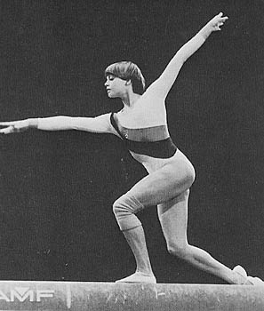

Susan Cheesebrough (GBR)
1979 and 1980 British AA Champion

Susan is one of three sisters. Her father, Albert, played soccer for Clarets in the 1950s.
Competition Results
1976
British Championships: 3rd AA
1977
GBR-ROM Dual Meet: 2nd Team, 7th AA
1978
British Championships: 1st AA
Champions All: 7th AA
Commonwealth Games: 5th AA
GBR-HUN Dual Meet: 6th AA
1979
British Championships: 1st AA
Champions All: 6th AA
Coca-Cola International: 9th AA
European Championships: 26th AA
GBR-ROM Dual Meet: 2nd Team, 8th AA
1980
Champions All: 8th AA
This page was created on December
20, 2000 and was last updated on November 08, 2005.
© Gymn Forum